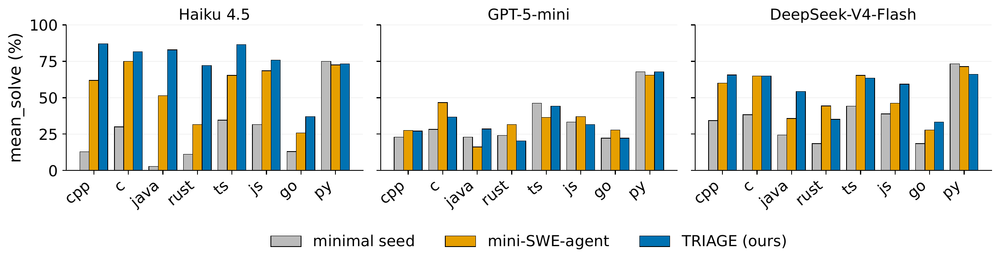
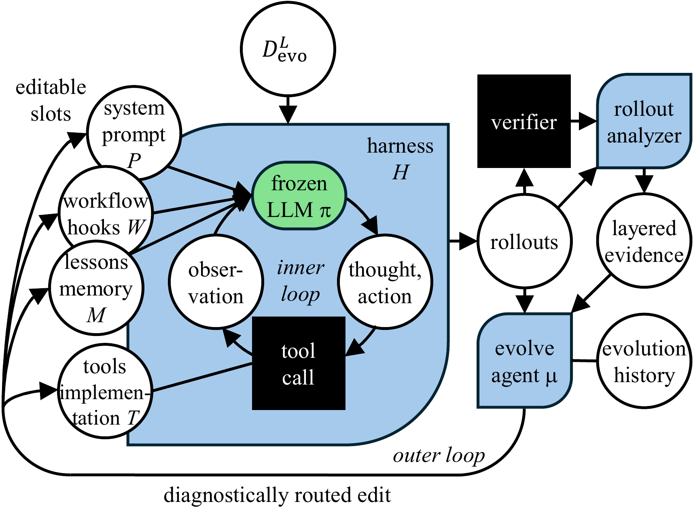
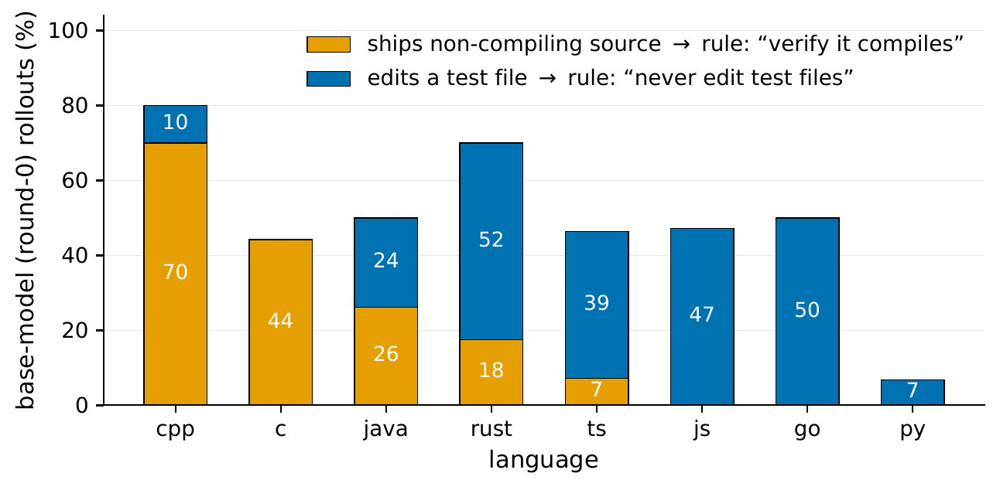
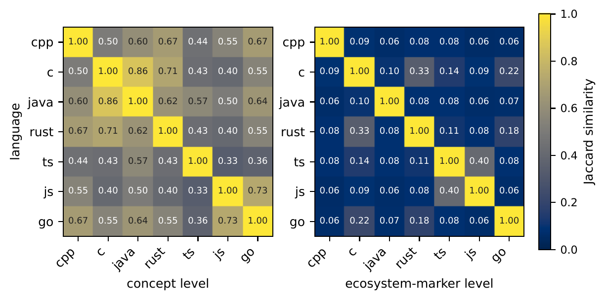
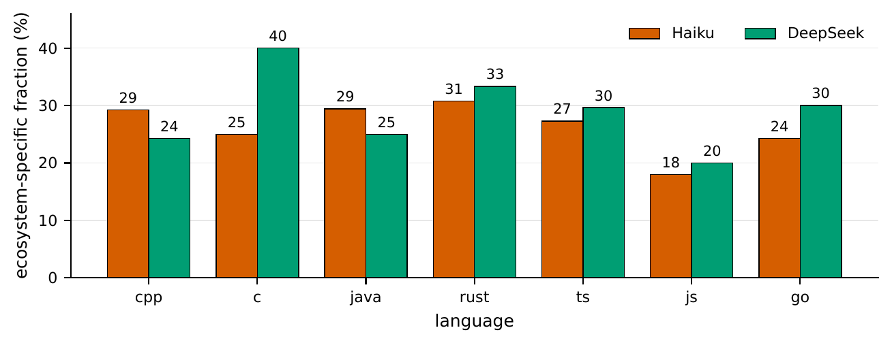
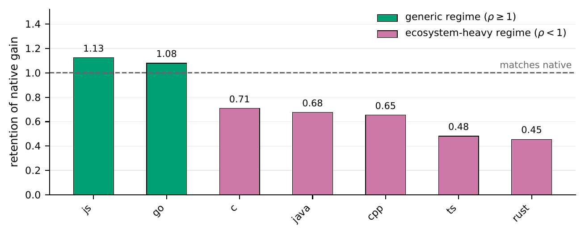
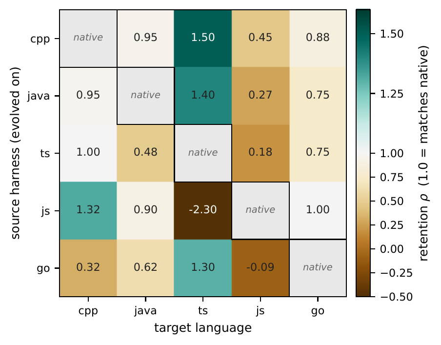

AbstractWhat the paper shows
Self-evolving harnesses work by letting an agent watch its own failures and automatically improve its prompts and tools. They make coding agents better, but nobody has really analyzed what they actually learned—do they just memorize the test cases, learn about the programming language, or fix the model's weaknesses?
We find out by running the same evolution algorithm on eight programming languages and three different AI models, then carefully reading what each evolved harness actually says. Here's what we learned: (1) The method works in most cases, and when it doesn't, we can explain why. (2) Improvements come from fixing the model's bad habits—things it's capable of doing but doesn't do automatically, like running tests before submitting. (3) Different languages evolved different solutions, but they follow the same core principles. (4) The core ideas transfer to new languages, but each language needs some customization. In the end, an evolved harness is really just a smart workaround layer that compensates for both what the language demands and what the model can't do—not just overfitting to the test cases.
It works in most cases—and we can explain why it doesn't
The method improves performance in most language-model combinations. When it doesn't (Python and one weak model), our theory predicts exactly why.
Improvements fix bad habits, not bad understanding
The model knows how to run tests and avoid breaking code—it just doesn't do it automatically. The harness teaches it to follow through.
Same idea, different details across languages
The core strategy transfers between languages, but each harness needs language-specific tweaks (about 20–40% of each one).
You can reuse most of it, but not all
The core ideas work in new languages, but complex languages like Java and C++ need some custom evolution to get the full benefit.
BackgroundWhy ask what a harness encodes?
Coding agents improve for two reasons: the base model gets smarter, or the harness around it gets better. The harness — prompts, tools, memory, workflow scaffolding — is the editable half, and a growing line of work now lets agents evolve it themselves.
Self-evolving harnesses work well and beat hand-written prompts. But past papers only test on one language, one model, one task at a time. This leaves a big gap: what exactly did the harness learn? Is it learning the language (how to build and test code)? Is it fixing the model's quirks? Or is it just overfitting to one test set? The answer matters because it determines whether the harness will work in a new language.
To find out, we run the same evolution algorithm across eight programming languages and three AI models—a 24-cell grid with one harness per cell. This is a clean experiment: same algorithm, different languages and models. Whatever changes in the harness must come from that combination, not from random choice or luck.
Language is a good dimension to vary because it's concrete—different languages have real differences in how you build, test, and run code. By keeping everything else the same (same task, same algorithm), we can see exactly what each language and model combination needs.
MethodTRIAGE: evolution you can read afterwards
We use a method called TRIAGE to make the evolution process traceable: every change the harness makes is linked to a specific failure it's trying to fix. This lets us see exactly what each evolved harness learned, not just that it got better.

The method has three key properties:
Everyone starts from scratch. Each harness begins as almost empty—just a basic prompt and one tool. Everything it learns must improve performance on test cases, so nothing survives just by accident.
We look deeper than just pass/fail. When the AI fails a test, we don't just know it failed—we see exactly what went wrong. Did it edit the wrong file? Submit broken code? These details tell us what to fix.
Changes must prove themselves. When we add a rule to the harness, we test whether it actually helps. If it doesn't, we remove it. This prevents junk from accumulating.
For each language, we use 20 test cases to evolve the harness, then test it on 50 new cases it hasn't seen. We run this 3 times and take the average.
Finding 1The recipe works — and where it doesn't is explicable
The method works in most cases. Over all 24 language-model combinations, it improved performance in most of them. Even when compared to hand-written baselines, it was competitive or better.
Where it doesn't work is interesting and predictable. Python doesn't improve under any model—the AI already knows how to write good Python. One weak model doesn't improve in any language—it just isn't capable enough. These aren't failures; they're exactly what our theory predicts. We'll explain why in Finding 2.
Finding 2Gains are compensation for recoverable execution defects
The harness doesn't teach the model better reasoning—it teaches better process. The AI knows how to fix bugs, but forgets to follow the steps.
We found two common bad habits:
Editing test files — a correct fix breaks because the test file got changed too. The harness fixes this with the rule: “never touch test files”. Submitting broken code — the AI forgets to check if the code even compiles. The harness adds: “verify it compiles before you submit”.

This is why generic solutions don't work: a one-size-fits-all rule would guess wrong for some languages. But it also tells us something useful: if the AI already avoids these mistakes (like Python tends to), the harness has nothing to teach it.
One weak AI model couldn't improve no matter the language—it's not that it needs a better harness, it just can't do the task well enough. This matches our theory: the harness only helps when the model can do better but doesn't automatically.
Finding 3A shared playbook, almost disjoint instantiations
Each language gets its own harness. But are they completely different, or do they follow the same playbook with different details? We looked at what each harness actually says and found they share the same ideas (like "check tests before submitting") but use completely different concrete steps (Java's test runner works nothing like JavaScript's).

The core strategy transfers between languages. But each harness also contains language-specific stuff (20–40% of it) that only works in its target language—file paths, build commands, test conventions.

Finding 4Reuse is real — and bounded by the ecosystem margin
Can you reuse a harness from one language in another? Let's test two ideas: (1) strip out the language-specific parts and keep only the core ideas, (2) just copy a complete harness as-is. Both work to some degree, but have limits.
Strategy 1: The universal harness (core ideas only)
We distilled the core ideas from all languages into one generic harness with no language-specific commands. Does it work in new languages?

Strategy 2: Borrow a complete harness (as-is)
What if you just take a harness evolved for one language and use it in another without modification?

The core travel; the details don't. When you borrow a harness from another language, you get the good ideas but miss out on language-specific optimizations. That's often good enough to bootstrap a new language, but you'll need evolution to get the best results.
Some harnesses export better than others. A harness built for one language's problems doesn't always help another. JavaScript teaches "run tests first," which helps typed languages (because building is part of running tests). But JavaScript itself doesn't benefit from C++'s "check types" rule because JavaScript doesn't have a separate type-checking step.
Both strategies work, but with tradeoffs. Universal harnesses cost you some performance. Borrowed harnesses need to match the language. The best approach depends on your language complexity: simple languages? The universal harness works fine. Complex languages? Budget time for evolution.
TakeawaysWhat this means for you
Here's the basic recipe: each programming language has its own conventions and pitfalls; your model already handles some of them, but not all; evolution fills the gaps. Based on this, here's what to do in different situations:
| Your situation | What to do | Why it works |
|---|---|---|
| Starting with a language you haven't seen before | Borrow a harness from another language, or use the universal template | The core ideas transfer well across languages (18 out of 20 pairs showed positive transfer) |
| Working with a simple language (Go, JavaScript) | The universal harness works fine—no need to customize | These languages don't need language-specific tricks; the gains come from good discipline alone |
| Working with a complex language (Java, C++, TypeScript) | You'll need to run evolution on your target language | About a third of the improvement comes from language-specific knowledge that doesn't transfer |
| Deciding if harness tuning is worth the effort | Check what mistakes your model makes most often | If your model already avoids the common pitfalls, there's nothing left for the harness to fix |
| Adding a check your language doesn't do automatically | Write it into the harness explicitly | Example: TypeScript needs explicit type-checking because running tests doesn't check types |
Honest accountingLimitations
Scope: We only test on single-goal code repair tasks from Multi-SWE-Bench—fix one bug per instance, verify it once. We don't test multi-goal scenarios, very long task sequences, or how harnesses adapt over time. How we measure a "recoverable defect" also depends on the evaluation rules: for instance, editing test files is fatal here because the grader checks against a hidden gold test, but that's protocol-specific. Still, evaluating all harnesses under the same rules gives reliable comparisons for this setting.
Methodology: We don't compare against other harness-optimization methods—each would need its own evolution budget across the full 24-cell grid. We also evaluate the system as a whole, not each component individually. Our data per language is modest (20 instances for training, 50 for testing), and evolution runs just once, so our findings describe patterns (which boundaries matter, where trade-offs occur) rather than individual numbers. Whether these insights hold for longer, more complex tasks is an open question.
OutlookWhat we think this changes
The contribution here is not a number. It is that "the harness got better" stops being a black box and becomes a quantity with parts you can name, measure, and budget for.
Before this study, a reported harness gain was compatible with several very different stories — the loop learned real engineering knowledge, or it papered over a model's bad habits, or it quietly memorized the benchmark. Those stories are indistinguishable from an aggregate score, and they imply opposite things about whether the artifact is worth keeping. Holding one recipe fixed across a grid forces them apart. What comes out is that the gain is largely compensation: the loop installs disciplines the model was already capable of following but didn't, and the disciplines a task demands are set by the ecosystem it lives in. That is a mundane-sounding answer, and we think its mundanity is the point — it means the artifact is inspectable, its failures are predictable from properties you can measure beforehand, and its value doesn't rest on the loop having discovered anything the model couldn't already express.
The most useful consequence is a negative one. If harness gain is compensation for measurable defects, then the defect profile tells you in advance whether to bother — and sometimes the answer is no. Python and GPT-5-mini both came back flat, from opposite axes, for the same reason: there was nothing left to install. In a field where the default assumption is that more scaffolding helps, having a cheap leading indicator for "this one won't" is worth more than another point of pass@1. It also reframes what a strong model is. GPT-5-mini is not the most capable of the three by solve rate, yet it is the least improvable by this loop — capability and behavioral discipline are separate axes, and only one of them is what harness engineering buys.
The other consequence is that reuse becomes a budgeting decision rather than a guess. The gain splits into a portable disciplinary core and an ecosystem-bound remainder, and — this is the part we did not expect to hold — the split measures the same on both sides of the wall: a fifth to two-fifths of the text a harness writes is ecosystem-specific, and on ecosystem-heavy targets roughly that same fraction of the gain survives neither transfer nor distillation. When a textual property and a held-out solve rate agree on a number, the decomposition is probably real rather than an artifact of how we tagged things. This decomposition also yields an immediately usable decision rule. A base policy's defect profile is measurable before any evolution is run, and it tells you where harness engineering will pay: C++ rollouts fail to compile 70% of the time, Go's under 10%, and Python's covered defect rate is 5.6% — which is why Python gains nothing under any of the three models. Once a cell is worth evolving, generic targets can be bootstrapped from a distilled, language-agnostic memory file that already matches native evolution (Go 1.08, JS 1.13), while ecosystem-heavy targets recover only half to two-thirds of the gain (TypeScript 0.48, C++ 0.65), making native re-evolution necessary. Neither set of numbers is a headroom estimate — our detectors cover only part of the recoverable space — but both are cheap to obtain and together tell you where to invest: bootstrap from whatever harness you have, avoid specialization where the ecosystem is generic, and pay for native evolution where it isn't.
Where this points next is at targets whose conventions appear in no public corpus: internal monorepos, embedded toolchains, domain-specific stacks. Public language ecosystems are the favorable case for reuse — best documented, most standardized, most heavily represented in pretraining — and even there the ecosystem margin is 20–40% of what the loop writes. The mechanism behind the JS→TS wall says why that should get worse rather than better: a discipline has to be named explicitly in the harness exactly when it is not a free consequence of the ecosystem's own execution chain, and private stacks are made of conventions that no execution chain enforces. The argument for evolving rather than hand-writing a rules file is not that the margin is large but that nobody knows where it sits; a defect profile is measured, and a hand-written scaffold hard-codes one guess. What makes this practical is the input: twenty resolved-issue instances with their test patches — recoverable from CI history — rather than a labeled dataset.
A second direction is that a harness which reliably produces verifier-passing trajectories precisely where a policy is weak is a data generator aimed by a diagnosis: typed routing selects which behavior to sample for, rather than filtering completed rollouts by outcome. The compensation account then makes the resulting claim differential and checkable. If training on that data internalizes the discipline, the portable component should be the part that disappears — the retention ρ of the stripped universal harness should fall sharply on a retrained policy, while the ecosystem margin, which encodes build commands and layout conventions that drift with the repository, should not move. A uniform shrink, or none at all, would be the informative outcome: the first would say the two components were never functionally distinct, and the second, once a failure to internalize is ruled out, that we have mislabeled what the loop installs.
What we'd most like readers to take from the grid is a methodological habit rather than any single result: when a self-improving system reports that it improved, ask what the artifact says, and vary something that should change the answer. The instrumentation that makes an edit attributable after the fact cost us more design effort than the search loop itself, and it is the only reason any of the four findings can be stated at all.
CitationBibTeX
If you find this work useful, please cite:
@misc{yang2026recipeharnessesselfevolutionencodes,
title={One Recipe, Many Harnesses: What Self-Evolution Encodes Across Languages and Models},
author={Siqi Yang and Qianlan Yang and Yu-Xiong Wang and Saurabh Pujar and Martin Hirzel},
year={2026},
eprint={2608.10178},
archivePrefix={arXiv},
primaryClass={cs.SE},
url={https://arxiv.org/abs/2608.10178},
}